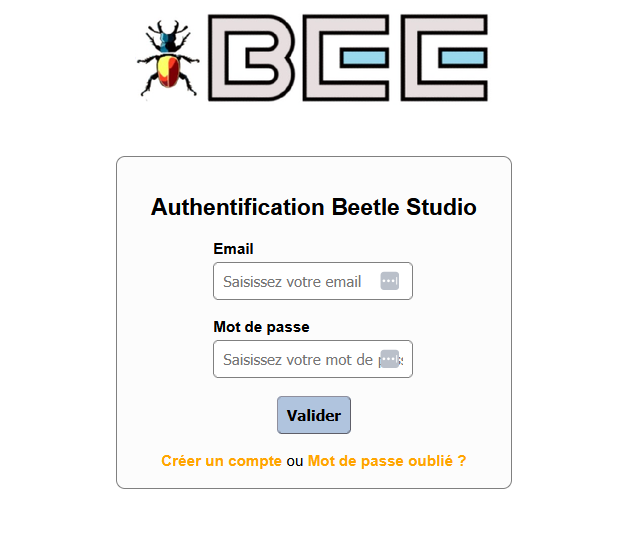
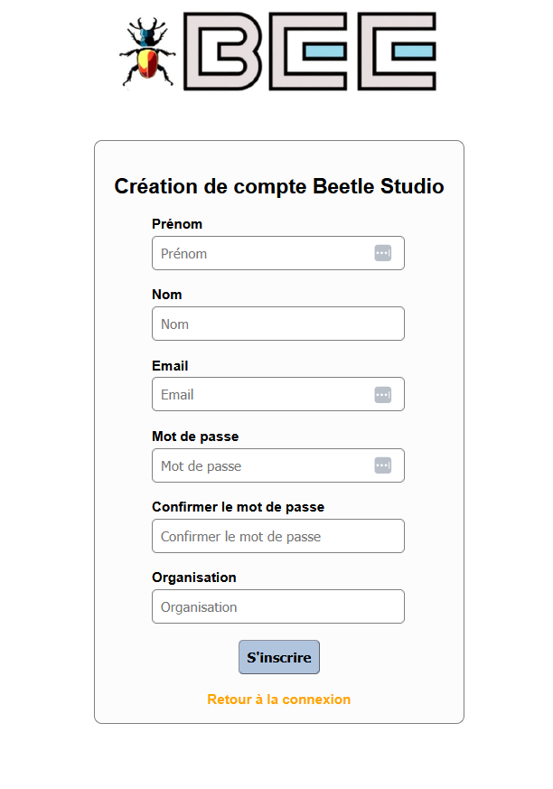
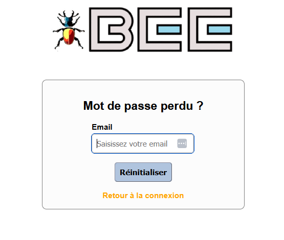
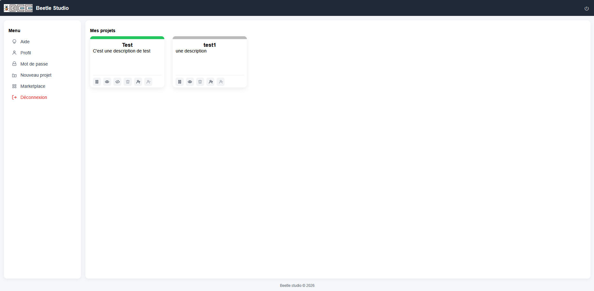

Précédent : II. Principes généraux | Index | Suivant : IV. Modélisation de bases de données
La page d'authentification va vous permettre de vous authentifier auprès du studio après avoir renseigner votre email et votre mot de passe.
Si vous n'avez pas créé de compte
auparavant, vous ne pourrez pas vous authentifier.
Votre compte peut également avoir été désactivé. Si c'est le cas,
vous ne pourrez également pas vous authentifier.
Une authentification réussie vous emmene directement vers la page
principale.
L'url pour atteindre cette page est la suivante et constitue l'unique point d'entrée du studio :
http://[votre domaine]/pybee/studio/signin.html
Voici une représentation de la page d'authentification :

Sur la page d'authentifiation qui est le seul point d'entrée du studio, vous pouvez créer un compte en cliquant sur
le lien "Créer un compte".
Tous les champs du formulaire de création de compte sont obligatoire.
Si une information est erronée ou manquante,
un message d'erreur sera affichée et la page vous invitera à corriger votre inscription.
Voici une représentation de la page de création de compte :

Beetle peut être utilisé de deux manières complémentaires :
Voici une représentation de la page de signalement de mot de passe perdu :

Beetle peut être utilisé de deux manières complémentaires :
Beetle peut être utilisé de deux manières complémentaires :
Voici une représentation de la page principale :

Précédent : II. Principes généraux | Index | Suivant : IV. Modélisation de bases de données